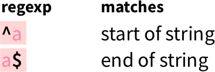

Section 3 Detect a full match
Here, we will detect simple patterns using str_which.
Tip: run ?str_which for its documentation.

From ‘Work with Strings Cheatsheet’, https://rstudio.com/resources/cheatsheets
3.1 str_subset demo
3.2 Example exercise: is_a_one
Write a function called is_a_one that detects if a string is one one.
The function must use str_subset.
These tests must pass:
expect_true(is_a_one("1"))
expect_false(is_a_one(""))
expect_false(is_a_one("X"))
expect_false(is_a_one(c("1", "1")))
expect_false(is_a_one(integer(0)))
expect_false(is_a_one(NULL))
expect_false(is_a_one(NA))
expect_false(is_a_one(Inf))3.3 Exercise: is_a_digit
Write a function called is_a_digit that detects if a string is one digit.
Use the regex pattern as shown on the cheatsheet to specify a digit:

From ‘Work with Strings Cheatsheet’, https://rstudio.com/resources/cheatsheets
These tests must pass:
expect_true(is_a_digit("0"))
expect_true(is_a_digit("1"))
# The other digits
expect_false(is_a_digit(""))
expect_false(is_a_digit("X"))
expect_false(is_a_digit(c("1", "2")))
expect_false(is_a_digit(character(0)))
expect_false(is_a_digit(NULL))
expect_false(is_a_digit(NA))
expect_false(is_a_digit(Inf))3.3.1 Answer: is_a_digit
expect_true(is_a_digit("0"))
expect_true(is_a_digit("1"))
# The other digits
expect_false(is_a_digit(""))
expect_false(is_a_digit("X"))
expect_false(is_a_digit(c("1", "2")))
expect_false(is_a_digit(character(0)))
expect_false(is_a_digit(NULL))
expect_false(is_a_digit(NA))
expect_false(is_a_digit(Inf))3.4 Exercise: is_a_word
Write a function called is_a_word that detects if a string is a word.
To simplify now, a word is defined as:
- Having one or more lowercase characters
- Having no dashes, nor numbers
Use the quantifiers as shown on the cheatsheet to specify that one needs one or more characters:

From ‘Work with Strings Cheatsheet’, https://rstudio.com/resources/cheatsheets
Use the anchors as shown on the cheatsheet to specify that the complete string, from begin to the end, must consist out of characters

From ‘Work with Strings Cheatsheet’, https://rstudio.com/resources/cheatsheets
These tests must pass:
expect_true(is_a_word("a"))
expect_true(is_a_word("an"))
expect_true(is_a_word("apple"))
expect_false(is_a_word("X"))
expect_false(is_a_word("XX"))
expect_false(is_a_word("Hi"))
expect_false(is_a_word("hI"))
expect_false(is_a_word("hoWdy"))
expect_false(is_a_word(c("an", "apple")))
expect_false(is_a_word(character(0)))
expect_false(is_a_word(NULL))
expect_false(is_a_word(NA))
expect_false(is_a_word(Inf))3.4.1 Answer: is_a_word
expect_true(is_a_word("a"))
expect_true(is_a_word("an"))
expect_true(is_a_word("apple"))
expect_false(is_a_word("X"))
expect_false(is_a_word("XX"))
expect_false(is_a_word("Hi"))
expect_false(is_a_word("hI"))
expect_false(is_a_word("hoWdy"))
expect_false(is_a_word(c("an", "apple")))
expect_false(is_a_word(character(0)))
expect_false(is_a_word(NULL))
expect_false(is_a_word(NA))
expect_false(is_a_word(Inf))3.5 Exercise: is_dna_sequence
Write a function called is_dna_sequence that detects if a string is
a DNA sequence.
To simplify now, a DNA sequence is defined as:
- There are four characters, one per nucleotides
- These characters are uppercase (A, C, G and T)
Use the alternates as shown on the cheatsheet to specify that each character must be one of the four nucleotides:

From ‘Work with Strings Cheatsheet’, https://rstudio.com/resources/cheatsheets
These tests must pass:
expect_true(is_dna_sequence("A"))
expect_true(is_dna_sequence("AC"))
expect_true(is_dna_sequence("ACG"))
expect_true(is_dna_sequence("ACGT"))
expect_false(is_dna_sequence("a"))
expect_false(is_dna_sequence("Ax"))
expect_false(is_dna_sequence("xA"))
expect_false(is_dna_sequence("AxA"))
expect_false(is_dna_sequence(c("A", "CGT")))
expect_false(is_dna_sequence(character(0)))
expect_false(is_dna_sequence(NULL))
expect_false(is_dna_sequence(NA))
expect_false(is_dna_sequence(Inf))3.5.1 Answer: is_dna_sequence
expect_true(is_dna_sequence("A"))
expect_true(is_dna_sequence("AC"))
expect_true(is_dna_sequence("ACG"))
expect_true(is_dna_sequence("ACGT"))
expect_false(is_dna_sequence("a"))
expect_false(is_dna_sequence("Ax"))
expect_false(is_dna_sequence("xA"))
expect_false(is_dna_sequence("AxA"))
expect_false(is_dna_sequence(c("A", "CGT")))
expect_false(is_dna_sequence(character(0)))
expect_false(is_dna_sequence(NULL))
expect_false(is_dna_sequence(NA))
expect_false(is_dna_sequence(Inf))